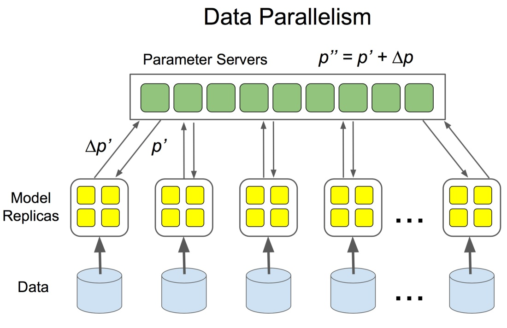
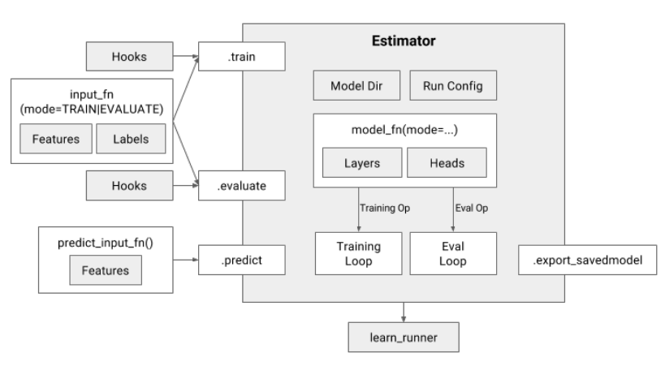

分布式 Tensorflow
六 28 四月 2018
Tensorflow 分布式训练的各种玩儿法 - 蹭 1.8 的热度
Tensorflow 1.8 发布了！ 保持着差不多一个月一个版本，够可以的！ 完整 Release Note 请移步 Github。
抛开 Tensorflow Lite 不说，我特别关心的是这一条：
Can now pass
tf.contrib.distribute.MirroredStrategy()totf.estimator.RunConfig()to run anEstimatormodel on multiple GPUs on one machine
解读下：TF 高层（high level） API Estimator 通过 MirroredStrategy()
支持单机多卡分布式了（In-graph replication, all-reduce synchronous）。
我们有理由相信，后面应该会有更多的分布式策略被支持，多节点，异步，模型并行等。
而我们的目标呢，在某些场景下基于目前的机房建设肯定是多机多卡才够劲儿。 所以，今天就简单总结下，我了解的 Tensorflow 分布式训练的各种玩儿法，以及接下来会继续跟进的几个方向。
1. 经典 ps & worker 模式

假定大家对 Tensorflow 的一些基本概念及架构已经有所了解，在开始介绍经典模式之前， 只简单介绍下分布式涉及到的一些重点概念及策略对比：
-
模型并行 vs 数据并行
模型并行：模型的各个部分并行于多个计算设备上；适应场景大模型，单个设备容不下；或者模型本身有比较好的并行性；
数据并行：多个模型副本分别处理不同的训练数据，以提高整体吞吐量；是常见的分布式训练策略；

-
in-graphreplication vsbetween-graphreplicationin-graph: 图内复制，只构建一个 client 并把包含所有的worker设备都在定义一个图中， 如果 worker 节点及设备过多，计算图过大会导致性能下降；而且只构建一个 client，数据分发的效率以及整体容错性都不好；between-graph: 图间复制，每个worker都初始化一个计算图副本， 通过ps( parameter server) 共享变量参数，只需要更新参数，免除了数据分发环节，在规模较大的情况下，相比in-graph提高了训练并行效率和容错性； -
同步训练 vs 异步训练
同步训练：每一次梯度更新，需要等所有的
worker处理完待训练数据，先做聚会处理后再更新参数； 优势是 loss 下降稳定；劣势是每一步的处理速度都取决于最慢的那个worker；异步训练：各个
worker的计算及模型更新都是相互独立的，没有统一控制； 优势是速度，优化计算资源利用率；劣势是 loss 下降不稳定；
因为数据同步相比较模型同步具有更普适的应用场景，所以针对数据同步的分布式训练的支持也就更适合作为 Tensorflow 通用特性来在框架级支持。
而源于 DistBelief 的基于 ps 和 worker 分布式训练架构在 Tensorflow 很早的版本中便提供了支持，这也就是这里称之为 经典 模式的原因。
在 Tensorflow 的 ps 和 worker 模式下，in-graph 和 between-graph replication 都有支持，但是基于性能和实用性考虑，可能 between-graph 使用的更多一些，同步和异步则更多的是根据模型的实际效果以及项目的具体需求来选择。
集群描述 tf.train.ClusterSpec
tf.train.ClusterSpec({
"worker": [
"worker0.example.com:2222",
"worker1.example.com:2222",
"worker2.example.com:2222"
],
"ps": [
"ps0.example.com:2222",
"ps1.example.com:2222"
]})
# 其中， "ps" 及 "worker" 为 `job_name`, 还需要 `task_index` 来创建具体的 `tf.train.Server` 实例。
注： 可以通过脚本或者借助调度框架来动态构建 ClusterSpec。
Server 通讯协议（protocol）
- Default
grpc - Verbs based RDMA with
grpc+verbs: https://github.com/tensorflow/tensorflow/tree/v1.8.0/tensorflow/contrib/verbs - MPI with
grpc+mpi: https://github.com/tensorflow/tensorflow/tree/v1.8.0/tensorflow/contrib/mpi - GPU Direct RDMA with
grpc+gdr: https://github.com/tensorflow/tensorflow/tree/v1.8.0/tensorflow/contrib/gdr
server = tf.train.Server(cluster, job_name="local", task_index=0, protocol='grpc+gdr') # default protocol is 'grpc'
实践中需要留意的点
- 同步还是异步的选择
ps和worker的个数比率的调整ps带宽占用过高时，ps及worker的调度策略- 分布式训练的状态机定义，包括终止态定义，以及当有
worker训练失败后，是否支持重启训练等
2. 高层 API (Estimator 和 Dataset)
参考： Tensorflow Estimator 2017 及 https://medium.com/onfido-tech/higher-level-apis-in-tensorflow-67bfb602e6c0

注：
Experiment已经废弃了， 具体参考： Github 文档。
- Remove the
experiment_fn. Instead, create theEstimator,train_specandeval_spec, then calltf.estimator.train_and_evaluatedirectly.
Estimator 代表一个完整的模型。Estimator API 提供的方法包括模型的训练、评估、预测及导出。

Estimator具有下列优势：
- 您可以在本地主机上或分布式多服务器环境中运行基于
Estimator的模型，而无需更改模型。此外，您可以在 CPU、GPU 或 TPU 上运行基于 Estimator 的模型，而无需重新编码模型。Estimator简化了在模型开发者之间共享实现的过程。- 您可以使用高级直观代码开发先进的模型。简言之，采用
Estimator创建模型通常比采用低阶 TensorFlow API 更简单。Estimator本身在tf.layers之上构建而成，可以简化自定义过程。Estimator会为您构建图。也就是说，您不必构建图。Estimator提供安全的分布式训练循环，可以控制如何以及何时：- 构建图
- 初始化变量
- 开始排队
- 处理异常
- 创建检查点文件并从故障中恢复
- 保存 TensorBoard 的摘要
使用
Estimator编写应用时，您必须将数据输入管道从模型中分离出来。这种分离简化了实验不同数据集的流程。
更多细节： https://www.tensorflow.org/programmers_guide/estimators
Dataset 是训练数据的抽象，通过 tf.data 下的 API 可以构建数据 pipeline，轻松处理大量数据、不同的数据格式以及复杂的转换。
class Dataset: Represents a potentially large set of elements.class FixedLengthRecordDataset: ADatasetof fixed-length records from one or more binary files.class Iterator: Represents the state of iterating through aDataset.class TFRecordDataset: ADatasetcomprising records from one or more TFRecord files.class TextLineDataset: ADatasetcomprising lines from one or more text files.
更多细节： https://www.tensorflow.org/programmers_guide/datasets
集群描述 TF_CONFIG 环境变量
参考：tf.estimator.train_and_evaluate with Estimator
chief worker（必须有且只有一个）:
# This should be a JSON string, which is set as environment variable. Usually
# the cluster manager handles that.
TF_CONFIG='{
"cluster": {
"chief": ["host0:2222"],
"worker": ["host1:2222", "host2:2222", "host3:2222"],
"ps": ["host4:2222", "host5:2222"]
},
"task": {"type": "chief", "index": 0}
}'
evaluator task（只有一个）:
# This should be a JSON string, which is set as environment variable. Usually
# the cluster manager handles that.
TF_CONFIG='{
"cluster": {
"chief": ["host0:2222"],
"worker": ["host1:2222", "host2:2222", "host3:2222"],
"ps": ["host4:2222", "host5:2222"]
},
"task": {"type": "chief", "index": 0}
}'
注： 可以通过脚本或者借助调度框架来设置 TF_CONFIG 。
实践中需要留意的点
Dataset性能： https://www.tensorflow.org/versions/master/performance/datasets_performance- 自定义
Estimator: https://www.tensorflow.org/get_started/custom_estimators
3. Ring Allreduce
参考：【第一期】AI Talk：TensorFlow 分布式训练的线性加速实践

无论是经典 ps & worker 模式，还是 High Level 的 Estimator API，在训练集群规模和模型较大时，
集中式的参数同步都会造成网络瓶颈。
好在 Baidu SVAIL 已经将 HPC 领域一种比较成熟的通信算法 Ring Allreduce 引入到 Deep Learning 训练框架中。
引入 Ring Allreduce 之后的拓扑变化如下：
→

参数更新步骤
- 生产或者定义集群的拓扑结构
- GPU 集群被组织成一个逻辑环
- 每个 GPU 有一个左邻居、一个右邻居
- 每个 GPU 只从左邻居接受数据、并发送数据给右邻居
- 梯度融合
-
Scatter Reduce：在这个 Scatter Reduce阶段，GPU 会逐步交换彼此的梯度并融合，最后每个 GPU 都会包含完整融合梯度的一部分
-
Allgather：GPU 会逐步交换彼此不完整的融合梯度，最后所有 GPU 都会得到完整的融合梯度
Scatter Reduce
为了方便说明，我们用梯度加和代替梯度融合。假设集群中有 N 个 GPU，那么将梯度数据等分为N 份， 接下来将在 GPUs 间进行 N-1 次 Scatter Reduce迭代，在每一次迭代中，每个 GPU 都会发送所有梯度数据的 1/N 给右邻居， 并从左邻居接收所有梯度数据的 1/N 。同一次 Scatter Reduce 迭代中，发送和接收的数据块的编号是不同的， 例如，第一轮迭代，第 n 个 GPU 会发送第 n 号数据块，并接收第 n-1 号数据块。经过 n-1 轮迭代，梯度数据会像图2 所示， 每个 GPU 都包含了部分完整梯度信息。
Allgather
和 Scatter Reduce 阶段类似，只不过这里只拷贝不求和，最终每个GPU 都得到了所有融合后的梯度。

这么做有什么好处呢？
下面我们来定量的分析一下，每个 GPU 在Scatter Reduce 阶段，接收 N-1 次数据，N 是 GPU 数量； 每个 GPU 在allgather 阶段，接收 N-1 次 数据；每个 GPU 每次发送 K/N 大小数据块，K 是总数据大小； 所以，Data Transferred=2(N−1)K/N = (2(N−1)/N)K，随着 GPU 数量 N 增加，总传输量恒定！ 总传输量恒定意味着通信成本不随 GPU 数量增长而增长，也就是说我们系统拥有理论上的线性加速能力。 再回到 DS2 的例子，300million 参数也就是 1.2Gb 数据量，Ring Allreduce 方式更新一次需要传送并接收 2.4Gb 数据， 假设网络使用 GPUDirect RDMA + InfiniBand，GPUDirect RDMA 带宽约为10Gb/s；InfiniBand 带宽约为 6Gb/s， 所以通信瓶颈在 InfiniBand 。(2.4Gb)/(6.0Gb/s) ≈ 400ms，也就是每轮迭代需要 400 ms 做参数同步， 这 400ms 的数据传输时间是恒定的，不随 GPU 数量增加而增加。
划重点： 随着设备数量 N 增加，总传输量恒定
Tensorflow allreduce 实践
Tensorflow 1.8 的 Release Note 说到了，单机多卡的 allreduce 可以通过 Estimator + tf.contrib.distribute.MirroredStrategy() 实现；
对于多机多卡， 来自 Uber 的开源项目 Horovod 就是一个不错的选择。
总结
通过从经典 ps worker 模式到 Estimator API 封装，再到更高效的 Ring Allreduce 的引入，
可以看出随着 Deep Learning 需求的激增，训练框架也被朝着更快更强和更易用的方向推进。
分布式训练在大规模机器学习中是最耗时间和计算资源的哪一环，如何能有效的提高分布式训练的效率，
一定是各框架和 AI 平台提供方大家集中发力的一个点。
Ring Allreduce 只是优化分布式训练中参数同步的一个方向，通过 Horovod 的推出，我们也确实看到了几乎逼近理想的线性扩展能力， 但其实深度学习是个整体工程，一定还有其他更多方面等着大家去不断的优化。
基于容器支撑深度学习 AI 平台，可以有效的发挥容器更轻量的优势，而且镜像封装各个框架及运行环境也可以降低上手门槛，再加上像 Kubernetes 这样的容器调度平台，在提高计算资源的整合能力的同时保证整体使用率。
kubeflow 就是一个整合了基于 Kubernetes 生态圈的机器学习工具箱， 虽然目前还不算成熟，但还是朝着很不错的方向在前进，包括 tf-operator 的升级，更多框架的支持，更好的存储接入，引入工作流引擎等， 都是很有吸引力的尝试。
后面我会继续跟进 kubeflow，希望能有更多有意思的东西总结出来。
限于个人能力，这里只是简单“堆叠”了我学习 Tensorflow 分布式训练过程中的找到的一些资料和说明，如有错误，还望指出。
Refs:
- https://zhuanlan.zhihu.com/p/35083779 "分布式 TensorFlow 入门教程"
- https://zhuanlan.zhihu.com/p/34172340 "【第一期】AI Talk：TensorFlow 分布式训练的线性加速实践"
- https://www.oreilly.com/ideas/distributed-tensorflow
- http://download.tensorflow.org/paper/whitepaper2015.pdf
- https://www.usenix.org/system/files/conference/osdi16/osdi16-abadi.pdf
- https://arxiv.org/pdf/1708.02637.pdf
- https://eng.uber.com/horovod/ "Meet Horovod: Uber’s Open Source Distributed Deep Learning Framework for TensorFlow"
- https://medium.com/onfido-tech/higher-level-apis-in-tensorflow-67bfb602e6c0 "Higher-Level APIs in TensorFlow"
Category: AI Tagged: ai tensorflow distributed-